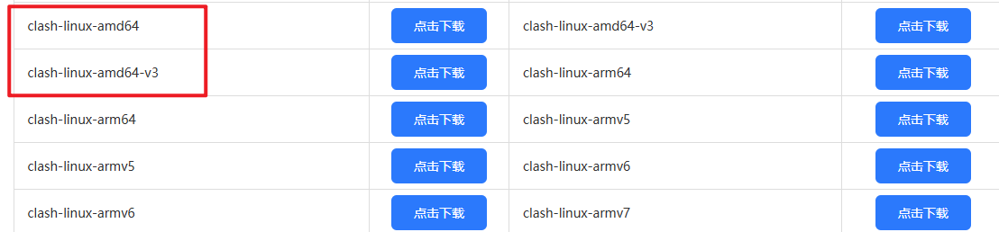
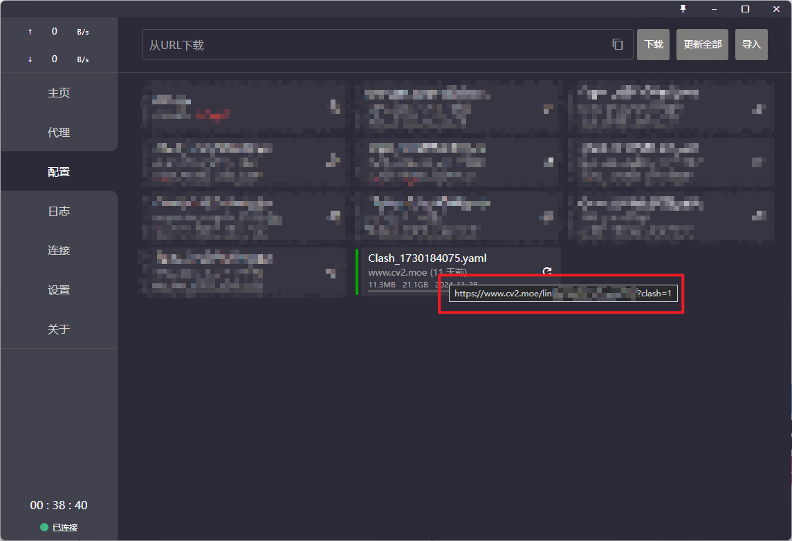
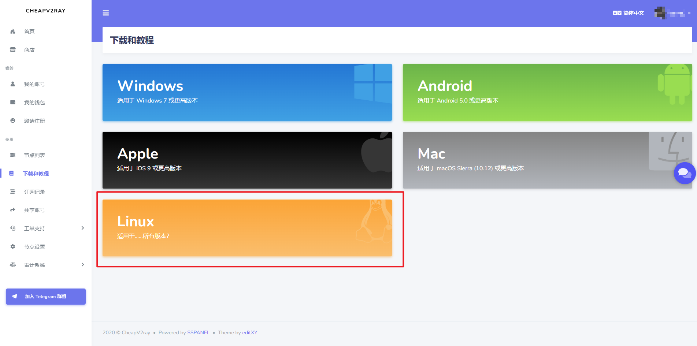
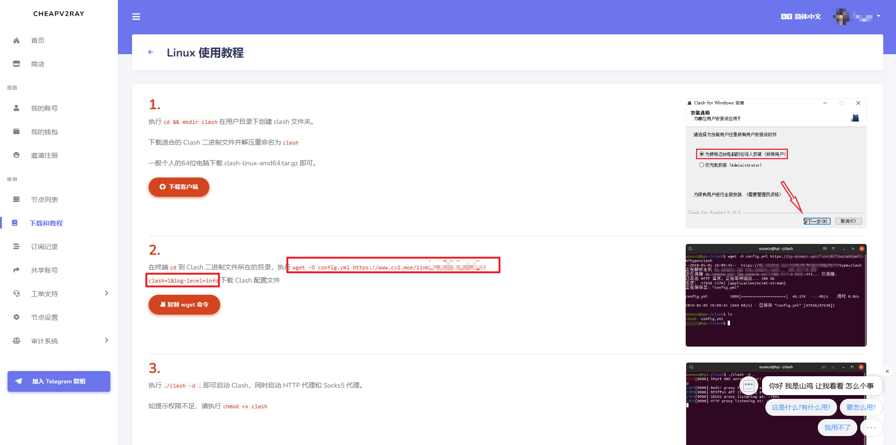
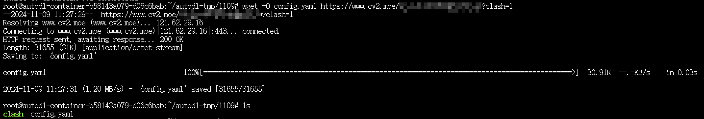
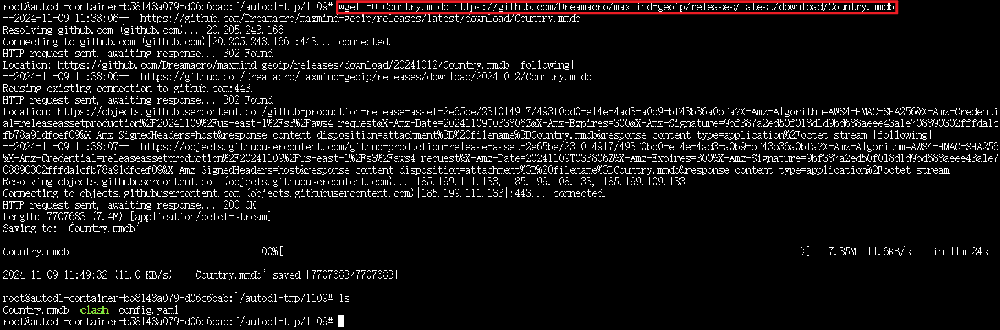
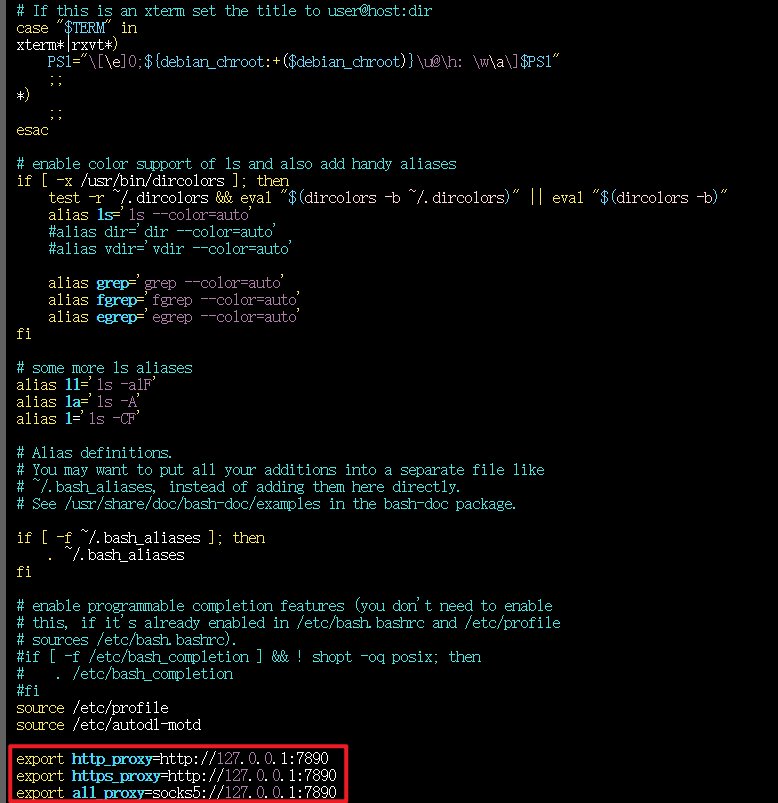
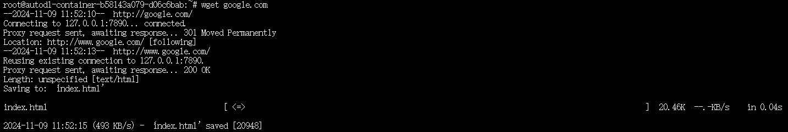
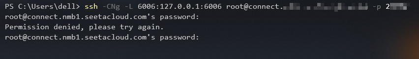
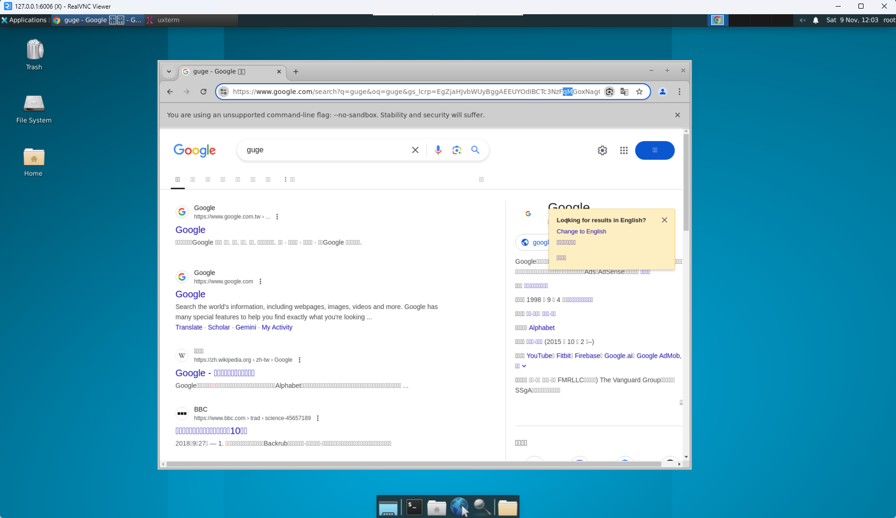

Linux服务器使用clash配置VPN
之前配置过服务器的VPN，但是最近在一个新的服务器上重新配置的时候总是不成功。经过一番努力，最终成功配置VPN，特此记录。
1 下载 clash 安装包
首先需要为服务器下载 clash 安装包，进入 Clash Releases 网站选择红色的两个其中之一进行下载。

如果服务器有界面，则可以直接使用服务器的浏览器进行下载。如果没有，则先使用自己的电脑下载后，传输到服务器中。
下载之后进行解压，得到文件 clash-linux-amd64-v3-v1.18.0。
1 | gunzip clash-linux-amd64-v3-v1.18.0.gz |
使用 mv 命令将其重命名为 clash，方便之后使用。
1 | mv clash-linux-amd64-v3-v1.18.0 clash |
之后增加 clash 程序执行的权限：
1 | chmod +x clash |
此时还不能运行 clash，因为我们还少两个文件：
- config.yaml：配置文件
- Country.mmdb：包含 IP 地址到国家的映射，Clash 利用这个文件来识别用户的 IP 地址所在的国家或地区
接下来分别介绍如何获取这两个文件。
2 获取 config.yaml
config.yaml为clash的代理规则和clash的一些其他设置。代理规则不需要我们自己编写，通过订阅地址直接下载即可。
1 | wget -O config.yaml "你的订阅链接" |
如果使用的是 cv2 机场，则有两种方法可以获得 clash 的订阅链接。
2.1 方法一
打开自己电脑的 clash ，然后选择“配置”这一栏，把鼠标放在配置文件上停留，就会出现一个链接，这个链接就是你的订阅链接。

2.2 方法二
打开网页 cv2.store 进行登录，然后选择左侧的“下载和教程”，点击“Linux”。

图中所示的链接就是你的订阅链接。

到这里，我们就获得了属于自己的配置文件，现在一共有 clash 和 config.yaml 这两个文件，接下来需要获取 Country.mmdb。

3 获取 Country.mmdb
目前版本的 clash 不会自动生成MMDB文件，所以需要使用命令行下载。
1 | wget -O Country.mmdb https://github.com/Dreamacro/maxmind-geoip/releases/latest/download/Country.mmdb |
这里需要访问 github，如果下载速度较慢，可以先下载到自己电脑上，然后将该文件上传到服务器中。

4 运行 clash
现在需要的两个文件我们都获取了，使用以下命令运行 clash：
1 | ./clash -d . |
运行 clash 之后还需要修改系统代理，这样流量才能走 clash。
4.1 临时修改
在终端运行以下命令：
1 | export http_proxy=http://127.0.0.1:7890 |
4.2 永久修改
- 运行
cd ~切换到 root 账户目录 - 运行
vim .bashrc编辑，添加系统代理
1 | export http_proxy=http://127.0.0.1:7890 |
添加后进行保存。

4.3 测试是否配置成功
4.3.1 命令行测试
如果运行 wget google.com 后能够得到一个 html 文件，则说明配置成功。

4.3.2 图形化测试
如果服务器只有命令行，没有图形化桌面，可以为服务器配置一个图形化桌面。
VNC（Virtual Network Computing ）是一种图形化的桌面共享协议，它使用远程帧缓冲协议 (RFB) 来远程控制另一台计算机，它将键盘和鼠标事件从一台计算机传输到另一台计算机，通过网络向另一个方向转发图形屏幕更新。 对于一般性的GUI程序运行需求，我们其实可以借助VNC在不安装完整桌面环境的情况下方便快捷的实现，下面介绍如何借助turbovnc工具，在实例中运行一个GUI程序并在本地电脑进行显示：
首先需要给服务器安装VNC和必要的一些图形显式库：
1 | # 安装基本的依赖包 |
以上启动Server时，手动设置了rfbport=6006端口，下面通过SSH隧道将实例中的6006端口代理到本地。
在本地电脑的终端（cmd/powershell/terminal等）中执行代理命令：
1 | ssh -CNg -L 6006:127.0.0.1:6006 用户名@IP地址 -p 端口 |
- 需要把用户名和IP地址换成自己服务器的用户和地址，关口是SSH指令访问的服务器的端口，请找到自己实例的ssh指令做相应替换。
6006:127.0.0.1:6006是指代理实例内6006端口到本地的6006端口。

执行上述命令后，没有任何日志是正常的，只要没有要求重新输入密码或错误退出。
之后使用turbovnc客户端进行连接，地址为上述获取的地址，一切顺利的话，输入密码就能看到VNC连接成功后的图形化界面，以及正在运行在实例中的GUI程序；

如上图所示，可以访问谷歌浏览器，所以VPN配置成功。
5 clash 自启动和后台运行
5.1 配置自运行
上面的方式是在终端运行 clash，当我们把终端关闭之后，clash 也会关闭，所以可以使用进程的方式来运行 clash 进行解决。
在/etc/systemd/system/目录新建一个clash.service文件，并且直接进入vim编辑器。
1 | vim /etc/systemd/system/clash.service |
clash.service 文件内容如下：
1 | [Unit] |
之后保存，然后开始启动 clash 服务：
1 | systemctl start clash |
使用命令查看一下是否正常运行：
1 | systemctl status clash |
5.2 systemctl 常用命令
systemctl status clash：查看clash服务systemctl start clash：启动clash服务systemctl stop clash：停止clash服务systemctl restart clash：重启clash服务systemctl enable clash：设置开机自启clash服务systemctl daemon-reload：如果修改了clash.service文件，需要此命令来重载被修改的服务文件
systemctl 是一个用于初始化系统和服务管理的命令行工具，属于 systemd 系统管理守护进程的一部分。它是现代 Linux 发行版中管理服务和系统状态的主要工具。
6 参考文档
 微信
微信 支付宝
支付宝